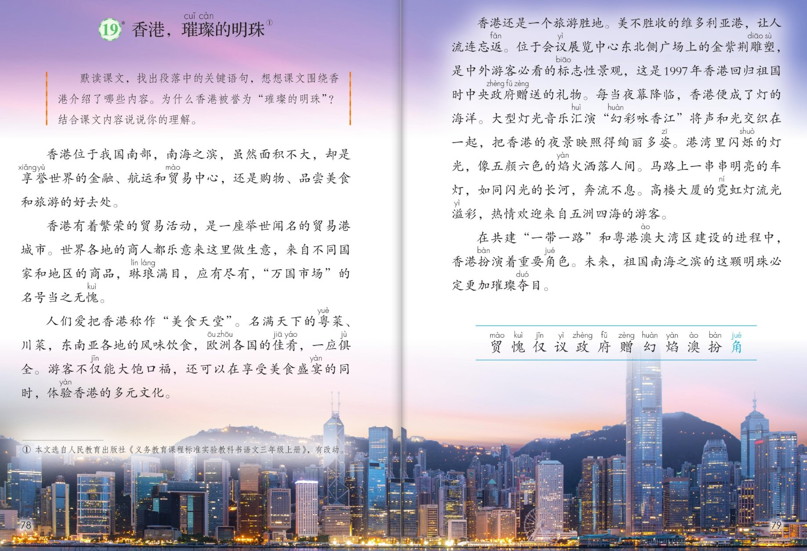

×
🔊 手机听不到声音怎么办？
① 先把手机
媒体音量调大 ，确认没开静音、没连蓝牙耳机；在微信里打开的，点右上角「⋯ → 用浏览器打开」。
② 还是没声音？到应用商店免费下载
Microsoft Edge 浏览器 （它自带朗读发声），用它打开本页面就能出声。
③ 换了 Edge 仍然没声音，说明这部手机的
硬件/系统不支持 网页朗读（多为老旧机型）；近几年买的新手机一般都能正常播放。
→ 打开声音自检
💎 第 19 课《香港，璀璨的明珠》· 有声图文带读
统编版语文 · 第六单元·阅读（略读课） · 课本 P78~79 · 素养升级版（对标 2022 课标第二学段）
课文 5 个自然段
素养目标 4
会认字 12
听写词 12
近义词 4 组
关键语句探究 6 卡
深入理解 8 题
本课本领 默读·自己找关键句
🎧 略读课这样学（可随时点任意一句、一个字、一个词单独听）： ① 听读课文 ——一句一句读，读到哪一句哪一句发光；再试着自己默读 ，把每段的关键句找出来。② 学字词 ——12 个会认字（角是多音字），点一个读一个（略读课不列写字表，重在认读）。③ 词语·听写 ——听写 12 个课文词（读两遍→你写→报答案→听示范句），再听 4 组近义词辨析。④ 深入理解 ——8 道题（认知 / 理解 / 运用 / 拓展），先想后看。⑤ 小导游带你游香港 ——市场、美食、景点、夜景，一边听一边想象画面。🌟 略读任务（教材学习提示）：默读课文，找出段落中的关键语句；想想课文围绕香港介绍了哪些内容；说说为什么香港被誉为“璀璨的明珠”。
📌 本单元语文要素 ——单元导语（P69 照录）：祖国，我爱你。我爱你壮美的山河，我爱你每一寸土地。 ；要点：饱览大好河山，感受祖国之美 ；借助关键语句理解一段话的意思 ；学习围绕一个意思把一段话写清楚 。
🀄 文化自信
🀄 文化自信
走进祖国璀璨的明珠——香港：万国市场、美食天堂、灯的海洋，感受香港与祖国紧紧相连，为东方之珠骄傲。
🗣 语言运用
🗣 语言运用
认识 12 个生字（角是多音字）；积累举世闻名、琳琅满目、流光溢彩等词语，学着用像、如同打比方。
💡 思维能力
💡 思维能力
自己默读课文，找出每段的关键语句，理清课文围绕香港介绍了哪些内容；能说清香港被誉为璀璨的明珠的理由。
🎨 审美创造
🎨 审美创造
一边读一边想象香港白天的繁荣和夜晚的璀璨；学着课文的样子，用比喻写一写自己见过的灯光夜景。
略读课的任务卡
📖 默读课文，找出段落中的关键语句 ，想想课文围绕香港介绍了哪些内容 。为什么香港被誉为"璀璨的明珠" ？结合课文内容说说你的理解。
点段前的 ①②③ 听整段
🔁 跟读模式：关
👁 隐藏注音（自测用）
字卡上的拼音标的是本课要认的字，读音来自课本生字表
🎤 朗读要求（老师标准） 默读为主 ：不出声、不指读，找出每段的关键句 ；赞美和自豪 ；比喻句读得舒展连贯 ：像焰火洒落人间、如同闪光的长河；读出节奏 。
🤫 默读小提示（略读课以默读为主） 听读 ——点句子听老师读，一边听一边想象画面；第二步 默读 ——不出声、不指读，想一想：课文围绕香港介绍了哪些内容？每一段的关键句是哪一句？ 第三步 交流 ——说说为什么香港被誉为璀璨的明珠 ，结合课文内容讲出理由。
①
香港位于我国南部，南海之滨，虽然面积不大，却是享誉世界的金融、航运和贸易中心，还是购物、品尝美食和旅游的好去处。
📌 这一段讲：总起：香港位于我国南部、南海之滨，面积不大，却是享誉世界的金融、航运和贸易中心，还是购物、美食和旅游的好去处。
②
香港有着繁荣的贸易活动，是一座举世闻名的贸易港城市。
世界各地的商人都乐意来这里做生意，来自不同国家和地区的商品，琳琅满目，应有尽有，“万国市场”的名号当之无愧。
📌 这一段讲：香港有着繁荣的贸易活动，是一座举世闻名的贸易港城市（关键句）；世界各地商人云集，商品琳琅满目、应有尽有，万国市场当之无愧。
③
人们爱把香港称作“美食天堂”。
名满天下的粤菜、川菜，东南亚各地的风味饮食，欧洲各国的佳肴，一应俱全。
游客不仅能大饱口福，还可以在享受美食盛宴的同时，体验香港的多元文化。
📌 这一段讲：人们爱把香港称作美食天堂（关键句）：粤菜川菜、东南亚风味、欧洲佳肴一应俱全；游客大饱口福，还能体验多元文化。
④
香港还是一个旅游胜地。
美不胜收的维多利亚港，让人流连忘返。
位于会议展览中心东北侧广场上的金紫荆雕塑，是中外游客必看的标志性景观，这是1997年香港回归祖国时中央政府赠送的礼物。
每当夜幕降临，香港便成了灯的海洋。
大型灯光音乐汇演“幻彩咏香江”将声和光交织在一起，把香港的夜景映照得绚丽多姿。
港湾里闪耀的灯光，像五颜六色的焰火洒落人间。
马路上一串串明亮的车灯，如同闪光的长河，奔流不息。
高楼大厦的霓虹灯流光溢彩，热情欢迎来自五洲四海的游客。
📌 这一段讲：香港还是一个旅游胜地（关键句）：维多利亚港让人流连忘返，金紫荆雕塑是回归礼物；夜幕降临后香港成了灯的海洋，幻彩咏香江、焰火、长河般的车灯流光溢彩。
⑤
在共建“一带一路”和粤港澳大湾区建设的进程中，香港扮演着重要角色。
未来，祖国南海之滨的这颗明珠必定更加璀璨夺目。
📌 这一段讲：在共建一带一路和粤港澳大湾区建设的进程中，香港扮演着重要角色；未来这颗明珠必定更加璀璨夺目（全文总结句）。
🤔 想一想（点我可跳过）
双页宽图自动占整行

第 78~79 页 · 课文
📖 人教版《语文》三年级上册 · 课本第 78~79 页 · 图片仅供个人学习，版权归人民教育出版社所有
📚 注释① 本文选自人民教育出版社《义务教育课程标准实验教科书语文三年级上册》，有改动。
点一个字，听读音、词语和在课文里的句子（略读课只要求认读）
点一行，听读这一组词语
贸 贸易 外贸 商贸
愧 无愧 问心无愧
赠 赠送 赠言 回赠
幻 幻想 变幻 梦幻
读两遍 → 你在纸上写 → 报答案 → 听示范句
准备听写 · 共 12 个词
○ ○ ○
点下面的「开始听写」，听到一个词就写一个词。
▶ 开始听写
🔁 再读一遍
👁 看答案
点词听读，点句子听示范句，再自己说一句
1 贸易 课文词
示范句：香港有着繁荣的贸易活动，是一座举世闻名的贸易港城市。
✏️ 我也能说：香港有着繁荣的什么活动。
2 无愧 课文词
示范句：万国市场的名号当之无愧。
✏️ 我也能说：万国市场的名号当之怎样。
3 不仅 课文词
示范句：游客不仅能大饱口福。
✏️ 我也能说：游客怎样能大饱口福，还可以体验多元文化。
4 会议 课文词
示范句：位于会议展览中心东北侧广场上的金紫荆雕塑。
✏️ 我也能说：金紫荆雕塑在什么展览中心附近。
5 政府 课文词
示范句：这是一九九七年香港回归祖国时中央政府赠送的礼物。
✏️ 我也能说：金紫荆雕塑是谁赠送的礼物。
6 赠送 课文词
示范句：这是中央政府赠送的礼物。
✏️ 我也能说：中央政府怎样了礼物。
7 幻彩 课文词
示范句：大型灯光音乐汇演幻彩咏香江将声和光交织在一起。
✏️ 我也能说：灯光音乐汇演叫什么名字。
8 焰火 课文词
示范句：港湾里闪耀的灯光，像五颜六色的焰火洒落人间。
✏️ 我也能说：闪耀的灯光像什么洒落人间。
9 港澳 课文词
示范句：在共建一带一路和粤港澳大湾区建设的进程中。
✏️ 我也能说：香港和哪座城市常常连在一起说。
10 扮演 课文词
示范句：香港扮演着重要角色。
✏️ 我也能说：香港怎样着重要角色。
11 角色 课文词
示范句：香港扮演着重要角色。
✏️ 我也能说：香港扮演着怎样的什么。
12 琳琅满目 课文词
示范句：来自不同国家和地区的商品，琳琅满目，应有尽有。
✏️ 我也能说：各地的商品怎么样。
相同点 / 不一样在哪 / 各造一句
流连忘返 — 依依不舍
相同：都表示舍不得离开。
不一样：流连忘返 偏重被美景吸引，玩得忘了回去；依依不舍 偏重感情上舍不得分别。
流连忘返：美不胜收的维多利亚港，让人流连忘返。
琳琅满目 — 应有尽有
相同：都表示东西多而全。
不一样：琳琅满目 偏重眼前美好的东西多得看不过来，多形容商品、展品；应有尽有 偏重该有的全都有。
琳琅满目：来自不同国家和地区的商品，琳琅满目。
美不胜收 — 目不暇接
相同：都表示美好的东西多，看不过来。
不一样：美不胜收 偏重景色太美，一时看不完、收不尽；目不暇接 偏重东西多、来得快，眼睛来不及看。
美不胜收：维多利亚港的景色美不胜收。
享誉世界 — 举世闻名
相同：都表示名气大，全世界都知道。
不一样：享誉世界 偏重在全世界享有好名声；举世闻名 偏重全世界的人都知道。
享誉世界：香港是享誉世界的金融、航运和贸易中心。
香港的名号 万国市场 美食天堂 旅游胜地 璀璨的明珠
灯的海洋 五颜六色的焰火 闪光的长河 流光溢彩
四字词语 举世闻名 琳琅满目 应有尽有 当之无愧
美食天堂 粤菜 川菜 风味饮食 佳肴
点一张卡，听这条阅读线索
前两课老师带着找关键句，这一课自己默读自己找 ——六张卡片，看香港这颗明珠的秘密藏在哪里。
📖 略读课练什么
教材学习提示说：默读课文，找出段落中的关键语句——前面学的方法，这一课自己用，这是本单元的自主实践课。
🛍 每段围绕一个意思
第②段写贸易（万国市场），第③段写美食（美食天堂），第④段写景点和夜景（旅游胜地）——每段抓住第一句关键句，整段意思就明白了。
🌊 三个比喻把夜景写活
灯的海洋、焰火洒落人间、闪光的长河——三个比喻连用，香港的夜晚一下子亮起来了。
🎁 一句话藏着历史
金紫荆雕塑是一九九七年香港回归祖国时中央政府赠送的礼物——读这段话，要读得庄重。
💎 课题就是总结句
为什么说香港是璀璨的明珠？白天繁荣热闹，夜晚灯火璀璨，未来更加夺目——课题和结尾遥遥呼应。
🇨🇳 结尾写未来
在共建一带一路和粤港澳大湾区建设的进程中，香港扮演着重要角色——祖国和香港紧紧相连，明珠更加璀璨。
标「答案不唯一」的题，说得有道理都对
认知 课文围绕香港介绍了哪些内容？看解析
🤔 想一想
解析：
先总说香港是享誉世界的金融、航运和贸易中心，还是购物、美食和旅游的好去处；再分写繁荣的贸易（万国市场）、美食（美食天堂）、景点和夜景（旅游胜地）；最后展望未来，这颗明珠必定更加璀璨夺目。
🌈 答案不唯一，说得有道理都对
认知 “万国市场”这个名号是怎么来的？看解析
🤔 想一想
解析：
世界各地的商人都乐意来香港做生意，来自不同国家和地区的商品琳琅满目、应有尽有，所以“万国市场”的名号当之无愧。
🌈 答案不唯一，说得有道理都对
理解 默读课文，找出段落中的关键语句，想想课文围绕香港介绍了哪些内容。（教材学习提示照录）看解析
🤔 想一想
解析：
关键句示例：香港有着繁荣的贸易活动，是一座举世闻名的贸易港城市；人们爱把香港称作美食天堂；香港还是一个旅游胜地；每当夜幕降临，香港便成了灯的海洋——抓住每段关键句，香港的内容就清楚了。🌈 找出一两句并说清理由都对。
🌈 答案不唯一，说得有道理都对
理解 为什么香港被誉为“璀璨的明珠”？（教材学习提示照录）看解析
🤔 想一想
解析：
因为它虽然面积不大，却享誉世界：贸易繁荣是万国市场，美食云集是美食天堂，景色迷人、夜景璀璨是旅游胜地；未来在祖国怀抱里必定更加璀璨夺目。白天繁荣、夜晚璀璨，像一颗闪闪发光的明珠。🌈 结合课文说出一两处理由都对。
🌈 答案不唯一，说得有道理都对
理解 港湾里闪耀的灯光，像五颜六色的焰火洒落人间。马路上一串串明亮的车灯，如同闪光的长河，奔流不息。——这两句好在哪里？看解析
🤔 想一想
解析：
把灯光比作洒落人间的焰火，把车灯比作闪光的长河：一个写灯光五颜六色、满天绽放，一个写车灯连绵不断、向前奔流——两个比喻让香港的夜晚一下子亮起来、动起来了。
🌈 答案不唯一，说得有道理都对
运用 金紫荆雕塑为什么是中外游客必看的标志性景观？用自己的话介绍它的来历。看解析
🤔 想一想
解析：
因为它是一九九七年香港回归祖国时中央政府赠送的礼物，见证了香港回到祖国怀抱的重要时刻，所以中外游客都要去看一看。🌈 说清「什么时候、谁送的、纪念什么」都对。
🌈 答案不唯一，说得有道理都对
运用 学着课文的样子，用上「像……」「如同……」，写一写你见过的灯光或夜景。看解析
🤔 想一想
解析：
示范：广场上的喷泉灯光，像一群飞舞的萤火虫。大雨过后，路面上倒映的霓虹灯，如同打翻了的调色盘。🌈 用上一个比喻、写清一种灯光的样子都对。
🌈 答案不唯一，说得有道理都对
拓展 课文先写香港的现在，再写未来。第⑤段在全文起什么作用？看解析
🤔 想一想
解析：
第⑤段由写现在的繁荣转向写未来的展望：在共建一带一路和粤港澳大湾区建设中，香港扮演着重要角色，这颗明珠必定更加璀璨夺目——总结全文，又和课题遥遥呼应，让「明珠」的含义更深了一层。🌈 说出「总结全文、呼应课题」都对。
🌈 答案不唯一，说得有道理都对
💬 想象支架：总起 东方之珠全景 → 万国市场 → 美食天堂 → 旅游胜地 （白天 + 夜景） → 璀璨的未来 。轮到你了：说说课文围绕香港介绍了哪些内容，为什么香港被誉为“璀璨的明珠”（正是学习提示的两个任务）。
点一个角色，听他（她）的介绍
🎭 旁白
香港位于我国南部，南海之滨，虽然面积不大，却是享誉世界的金融、航运和贸易中心，还是购物、品尝美食和旅游的好去处。 / 在共建“一带一路”和粤港澳大湾区建设的进程中，香港扮演着重要角色。未来，祖国南海之滨的这颗明珠必定更加璀璨夺目。
💬 小导游要读出介绍和自豪 ：关键句读响亮，比喻句读舒展
🎭 小导游·市场
香港有着繁荣的贸易活动，是一座举世闻名的贸易港城市。世界各地的商人都乐意来这里做生意，来自不同国家和地区的商品，琳琅满目，应有尽有，“万国市场”的名号当之无愧。
💬 小导游要读出介绍和自豪 ：关键句读响亮，比喻句读舒展
🎭 小导游·美食
人们爱把香港称作“美食天堂”。名满天下的粤菜、川菜，东南亚各地的风味饮食，欧洲各国的佳肴，一应俱全。 / 游客不仅能大饱口福，还可以在享受美食盛宴的同时，体验香港的多元文化。
💬 小导游要读出介绍和自豪 ：关键句读响亮，比喻句读舒展
🎭 小导游·景点
香港还是一个旅游胜地。美不胜收的维多利亚港，让人流连忘返。 / 位于会议展览中心东北侧广场上的金紫荆雕塑，是中外游客必看的标志性景观，这是1997年香港回归祖国时中央政府赠送的礼物。
💬 小导游要读出介绍和自豪 ：关键句读响亮，比喻句读舒展
🎭 小导游·夜景
每当夜幕降临，香港便成了灯的海洋。大型灯光音乐汇演“幻彩咏香江”将声和光交织在一起，把香港的夜景映照得绚丽多姿。 / 港湾里闪耀的灯光，像五颜六色的焰火洒落人间。马路上一串串明亮的车灯，如同闪光的长河，奔流不息。高楼大厦的霓虹灯流光溢彩，热情欢迎来自五洲四海的游客。
💬 小导游要读出介绍和自豪 ：关键句读响亮，比喻句读舒展
每题给自己打 1~3 颗星
1. 我能正确认读 12 个会认字（含多音字角），读准记牢。 ☆ ☆ ☆
2. 我能默读课文，不出声、不指读，找出每段的关键句。 ☆ ☆ ☆
3. 我能说清课文围绕香港介绍了哪些内容。 ☆ ☆ ☆
4. 我能结合课文内容，说出香港被誉为璀璨的明珠的理由。 ☆ ☆ ☆
5. 我能用上像、如同打比方，写一句自己见过的灯光或夜景。 ☆ ☆ ☆
✍️ 课文把灯光比作焰火洒落人间 ，把车灯比作闪光的长河 。你也来学着写一写：用上"像……""如同……" ，写一句你见过的灯光或夜景。对象 （喷泉、路灯、彩灯、月亮……）；像什么 ；"像……"或"如同……" 写成一句话，读给同学听。